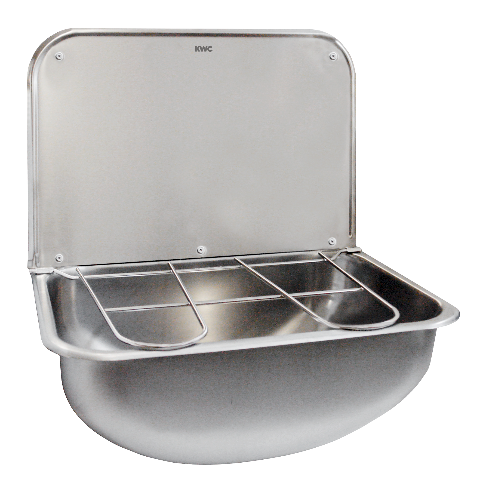

KWC Aquarotter GmbH
SIRIUS Ausgussbecken
WB440COP - 2000100353
Wandausgussbecken, für Wandmontage, Chromnickelstahl, Oberfläche seidenmatt, Materialstärke 0,8 mm, fugenlos eingeschweißtes Becken, mit Klapprost und Spritzwand, Ablauf hinten mittig, Siebventil G 1 1/2 B, ohne Überlauf. Mit Wandwinkel als Ventilhalterung, inklusive Befestigungsmaterial.
Abmessungen 436 x 190 x 339 mm (B x H x T)
Kontakt
Parkstraße 1-5 | 14974 Ludwigsfelde | Deutschland
Telefon +49 3378 818455 | kwc-info.de@kwc.com